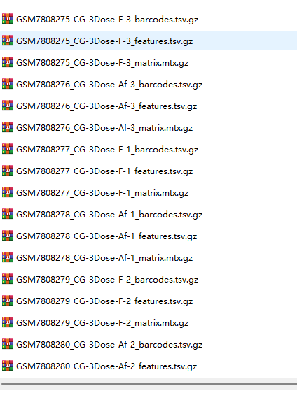
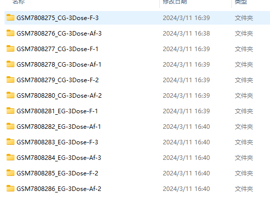
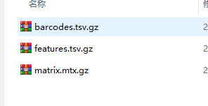

数据处理
需要清楚的表达自己的需求，大部分需求都可以通过Chatgpt进行查询，自己改一下就可以用
1. kegg 的k号基因名转成对应的基因名
感谢kegg的API：https://rest.kegg.jp/list/ko
library(httr)
api_url="https://rest.kegg.jp/list/ko"
response = httr::GET(api_url)
if (response$status_code == 200) {
# 读取响应内容
ko_list <- readLines(url(api_url))
# 将响应内容保存到文件
write(ko_list, "ko_list.txt")
cat("K 号列表已保存到 ko_list.txt 文件中。\n")
} else {
cat(sprintf("下载 K 号列表时出错: %s\n", response$status_code))
}
library(tidyverse)
str_split(ko_list, ";")[[1]][1]
result <- ko_list %>%
map_dfr(~ {
parts <- str_split(.x, ";")[[1]]
data.frame(
k_name = str_split(parts[1], "\\t")[[1]][1],
gene_name = str_split(parts[1], "\\t")[[1]][2],
col3 = str_trim(parts[2])
)
})
# 查看结果
print(result)
#对不定长的列进行分列，并按行堆叠放置
result1 = result %>%
separate_rows(gene_name, sep = ',')
import requests
from io import StringIO
import pandas as pd
# 下载 K 号列表
url = "https://rest.kegg.jp/list/ko"
response = requests.get(url)
if response.status_code == 200:
# 读取响应内容
ko_list = response.text.splitlines()
# 将响应内容保存到文件
with open("ko_list.txt", "w") as f:
f.write("\n".join(ko_list))
print("K 号列表已保存到 ko_list.txt 文件中。")
else:
print(f"下载 K 号列表时出错: {response.status_code}")
# 处理 ko_list
data = []
for line in ko_list:
parts = line.split(";")
col1, col2 = parts[0].split("\t")
if len(parts) > 1:
col3 = parts[1].strip()
else:
col3 = " "
data.append({"col1": col1, "col2": col2, "col3": col3})
df = pd.DataFrame(data)
# 对不定长的 col2 列进行分列
df = df.assign(col2=df['col2'].str.split(',')).explode('col2')
df_exploded = df.reset_index(drop=True)
# 查看结果
print(df)
df_exploded
2. 单细胞数据解压整理
原始数据结构

希望转变成的数据结构

# 简单版本
library(tidyverse)
library(stringr)
untar('./GSE244173_RAW.tar')
temp_name = list.files( ".", '^GSM',full.names = T )
samples = str_split(temp_name,'_',simplify = T)[,1]
lapply(unique(samples),function(x){
y=temp_name[grepl(x,temp_name)]
folder=paste(str_split(y[1],'_',simplify = T)[,1:2],
collapse = '')
dir.create(folder,recursive = T)
file.rename(y[1],file.path(folder,"barcodes.tsv.gz")) # 6
file.rename(y[2],file.path(folder,"genes.tsv.gz"))
file.rename(y[3],file.path(folder,"matrix.mtx.gz"))
})
# 复杂
library(tidyverse)
untar('./GSE244173_RAW.tar')
temp_name = list.files( ".", full.names = T )
temp_name = temp_name[str_starts(temp_name,'./GSM')]
library(fs)
# 创建一个字典,存储每个文件前缀对应的文件夹名称
prefix_to_folder <- new.env()
# 遍历所有文件
for (file_path in temp_name) {
# 获取文件名和前缀
file_name <- basename(file_path)
prefix <- strsplit(file_name, "_")[[1]][1]
# 完全还原的话，是
# parts = strsplit(file_name, "_")[[1]]
# prefix = paste(parts[1], parts[2], sep="_")
# 如果前缀还没有对应的文件夹,创建一个新的文件夹
if (!(prefix %in% ls(prefix_to_folder))) {
new_folder <- file.path(".", prefix)
dir.create(new_folder, showWarnings = FALSE)
assign(prefix, new_folder, envir = prefix_to_folder)
}
# 检查文件类型是否为 barcodes.tsv.gz、features.tsv.gz 或 matrix.mtx.gz
file_type <- strsplit(file_name, "_")[[1]][3]
if (file_type %in% c("barcodes.tsv.gz", "features.tsv.gz", "matrix.mtx.gz")) {
# 将文件移动到对应的文件夹
new_file_path <- file.path(get(prefix, envir = prefix_to_folder), file_name)
file_move(file_path, new_file_path)
}
}
# 先查看文件内部数据是否有问题
# 获取当前目录下所有以 GSM 开头的文件夹
gsm_folders <- dir(path = ".", pattern = "^GSM", full.names = TRUE)
# 遍历每个 GSM 文件夹
for (gsm_folder in gsm_folders) {
# 获取文件夹内所有文件
files_in_folder <- dir(path = gsm_folder, full.names = TRUE)
# 遍历每个文件
for (file_path in files_in_folder) {
# 获取文件名和后缀
file_name <- basename(file_path)
file_suffix <- strsplit(file_name, "_")[[1]][3]
# 创建新的文件路径,只保留后缀
new_file_path <- file.path(gsm_folder, file_suffix)
# 移动文件
file_move(file_path, new_file_path)
}
}
# 思路与R复杂的思路一致
# 将同一组数据放在同一目录下
ls GSM* | awk -F '_' '{print $1"_"$2}'| uniq | while read i;do mkdir $i;mv *$i*gz $i;done
# 各自重命名
find -name "*barcodes.tsv.gz" | while read i;do mv $i $(dirname $i)/barcodes.tsv.gz;done
find -name "*genes.tsv.gz" | while read i;do mv $i $(dirname $i)/genes.tsv.gz;done
find -name "*matrix.mtx.gz" | while read i;do mv $i $(dirname $i)/matrix.mtx.gz;done
3.linux批量给隐藏文件名加前缀
在Linux中，.开头的文件被视为隐藏文件。正常情况下，使用*通配符来匹配文件时，隐藏文件不会被包含在内。但是，当使用.*时，.开头的文件也会被匹配到。
让我们详细解释一下为什么rename 's/^(\.)/prefix_$1/' .* 可以让Linux批量给隐藏文件名加前缀：
rename命令：rename命令用于批量重命名文件。在这个命令中，我们使用正则表达式来指定重命名的规则。's/^(\.)/prefix_$1/'：这是正则表达式的部分。在这里，我们使用了替换操作符s/old/new/来指定替换规则。正则表达式^(\.)匹配以.开头的字符串，并且使用括号()将.捕获为第一个子模式。在替换部分，prefix_$1中的$1表示第一个子模式的内容，也就是.。因此，这个规则将以.开头的字符串替换为prefix_加上原始字符串。.*：这是通配符，用于匹配当前目录下的所有文件，包括隐藏文件。.*匹配以.开头的文件名，包括隐藏文件。因此，这个命令会将所有隐藏文件名加上前缀。 综上所述，通过使用正则表达式和通配符，rename 's/^(\.)/prefix_$1/' .*可以让Linux批量给隐藏文件名加上前缀。 除了使用rename命令外，您还可以通过循环结构（如for循环）来批量给隐藏文件名加前缀。以下是一个示例：
for file in .*; do
if [ -f "$file" ]; then
new_file="prefix_$file"
mv "$file" "$new_file"
fi
done